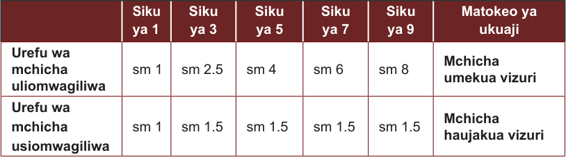

na kuziweka katika utaratibu mzuri. Kwa mfano, unaweza ukawa unapima urefu wa mchicha kila baada ya siku mbili ili kujua unaokua haraka zaidi. Unaweza kupanga kwanza urefu wa mchicha wa bustani moja. Kisha unaweza kupanga urefu wa mchicha wa bustani ya pili. Hii itakuwezesha kujua ni mchicha wa bustani gani unakua vizuri na wa bustani ipi haukui vizuri. Uchambuzi wa data huweza kutolewa kwa njia ya maelezo. Vilevile, hutolewa kwa takwimu mfano kwa njia ya chati au grafu.
6. Kutafsiri matokeo
Kwenye hatua hii data zilizochambuliwa hutafsiriwa na matokeo yake huwekwa kwenye kumbukumbu. Kumbukumbu hizo zinaweza kuwekwa katika majedwali, grafu au chati ambazo hurahisisha kutafsiri matokeo. Vilevile, huwasaidia wengine kufahamu kwa urahisi matokeo ya jaribio lililofanywa. Mfano wa jedwali la data ni kama ufuatao:
Jedwali namba 1: Umuhimu wa maji katika ukuaji wa mchicha

Mfano wa jedwali la data kuhusu umuhimu wa maji katika ukuaji wa mchicha.
7. Hitimisho
Hii ni hatua ya mwisho kwenye jaribio la kisayansi. Hatua hii inakuwezesha kuthibitisha au kukanusha dhanio. Pia, kuhusianisha na sababu ya tatizo au swali ulilokuwa umejiuliza. Matokeo ya jaribio yakikubaliana na dhanio, hitimisho litakuwa; “Kuna uhusiano kati ya ukuaji wa mchicha na maji.” Ikiwa matokeo ya jaribio hayakubaliani na dhanio, hitimisho litakuwa; “Hakuna uhusiano kati ya ukuaji wa mchicha na maji.”
8. Kuandika ripoti
Baada ya jaribio kukamilika kazi inayofuata ni kuandika taarifa ya jaribio. Ripoti huandikwa kwa ufupi kwa kufuata mpangilio ufuatao: